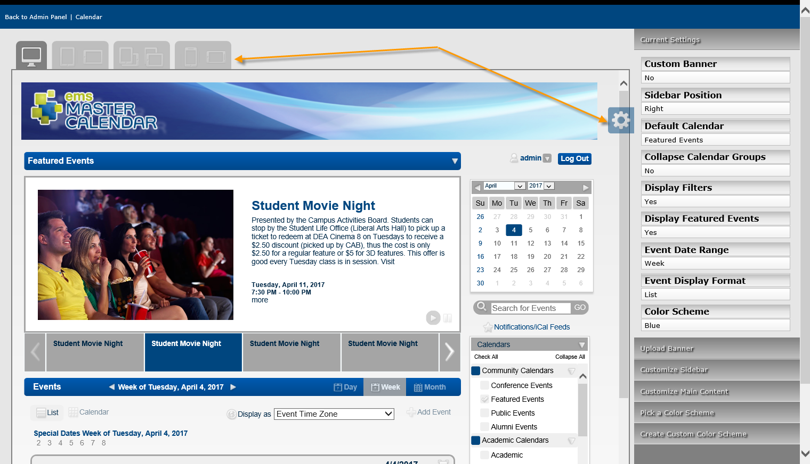

Concept:The theme determines the background color for calendars and section headers on pages in Master Calendar.
Four settings are available for setting the appearance of your Master Calendar site, including the automated emails that are sent from many areas within Master Calendar, including subscriptions, reminders, and change notifications.
|
|
Concept:The theme determines the background color for calendars and section headers on pages in Master Calendar. |
1. On the Admin panel, point to Site Administration, and then click Theme Roller.

2. Themes show in the upper left corner of the application. Click the Settings icon on the right for a list of options for customizing your application's appearance.

3. Click the theme you prefer in the upper left. Use the menu on the right to customize additional visual elements of the application.

|
Tips: You can Pick a Color Scheme or Create Custom Color Scheme by expanding the menus on the right.
You can upload your organization's custom site banner, which displays at the top of every page on your Master Calendar site, by expanding the Upload Banner menu. |
4. To change event icons, navigate back to the Admin panel and select Admin > Configuration > Event Icons.

5. You can select items to Edit or Delete, or Add a new icon.
Automated emails can be sent from many areas within your Master Calendar application, including subscriptions, reminders, and change notifications. You can configure a customized email header for these automated emails, and you can also select a logo for these automated emails that is displayed in the upper right hand corner of the automated emails.
1. On the Admin panel, point to Site Administration > Email Header.

2. On the page that displays, you can Add Header Image or Edit the header description.


|
Note: The new logo must be an image in one of the following formats —.jpg, .gif, .png, .bmp, and .ico. |
3. Click Save.
Page tags: article:topic